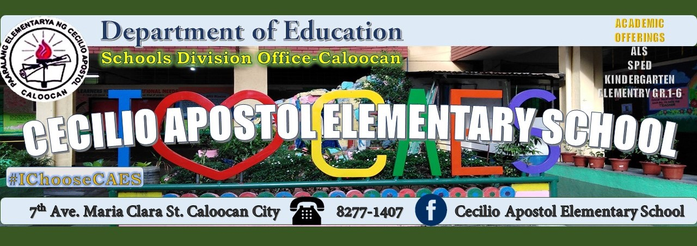

Welcome to your Dashboard!
Practice your signs and complete your assignments.
Pending Assignments
Practice a Sign
Select a sign above to begin.
Sign image appears here
Waiting for practice...
Your Camera Feed
Ensure good lighting and clear view of your hand.